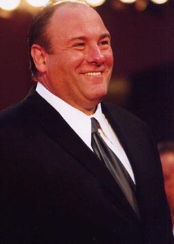
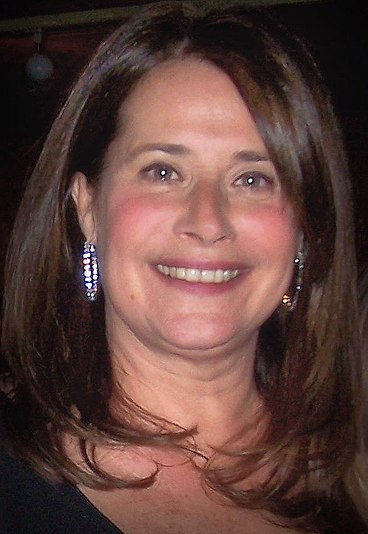
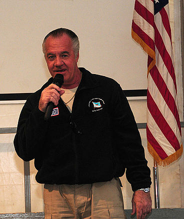

Personajes
Tony Soprano

Estado actual: Vivo.
Interpretado por James Gandolfini (1999-2007)
Aunque sus palabras pueden tener un gusto cuestionable, su fuerza es indiscutible. Le dijo a su psiquiatra que está en el negocio de la gestión
de residuos, pero Anthony Soprano es en realidad el jefe de la familia DiMeo, la más potente organización criminal en New Jersey. Es la segunda
generación de "chicos listos", ya que Tony es el hijo de Johnny Boy Soprano, un capo de la familia DiMeo que metió al hijo en la profesión
enseñándole los trucos. Después de la muerte de Johnny, Tony tuvo como mentor a Hesh Rabkin, Jackie Aprile y Pussy Bonpensiero, y también
al hermano de su padre, Corrado "Junior" Soprano. Después de la muerte de Jackie Aprile y del encarcelamiento de Junior Soprano, sube al
"trono" de la Familia
Dra. Jennifer Melfi

Estado actual: Viva, pero fugitiva tras separarse de Tony.
Interpretada por Lorraine Bracco (1999-2007)
La Dra. Jennifer Melfi es tal vez la última persona que alguien pensaría que está relacionada con el crimen organizado. Su vida privada es
casi inexistente, estando divorciada y con un hijo que va a la universidad Bard. Profesionalmente hablando, es una respetada psiquiatra
establecida por su cuenta. Pero un día abrió la puerta de su sala de espera y se topó cara a cara con la personificación de la cosa nostra:
Tony Soprano. El vecino le dio referencias de ella, ya que el capo estaba buscando un tratamiento para sus ataques de pánico . Aquel encuentro
cambiaria la vida de Melfi para siempre, y más de una vez deseó que no hubiera pasado.
Carmela Soprano
Estado actual: Desconocido.
Interpretada por Edie Falco (1999-2007)
Carmela DeAngelis se fijó en su futuro marido en el Instituto, aunque los dos pertenecían a mundos muy diferentes. Mientras Tony era un
estudiante sin futuro, Carmela era buena estudiante y popular. Carmela tenía los ojos puestos en la universidad; Tony parecía predestinado a
los suburbios de New Jersey. Que estos dos polos opuestos se atrajeran, y que después se casaran y comenzaran una vida juntos, puede parecer
al principio sorprendente. Pero si examinamos los acontecimientos más de cerca, están hechos uno para el otro.
Moltisanti
Estado actual: Fallecido en 2007, fue asfixiado por Tony tras quedar gravemente herido en un accidente de auto.
Christopher manejaba a gran velocidad sin prestar atención en el camino por lo que se vuelcan al encontrarse de frente con un auto que
conducía una joven acompañada de su amiga. Tras el accidente Tony sale del vehículo para auxiliar a Christopher, este le pide que llame para
pedir ayuda, Tony comienza a marcar 911, pero decide no hacerlo al ver todo lo que ha ocasionado la imprudencia de su sobrino, en cambio
decide asfixiarlo solo presionando su nariz, comienza a salir sangre por la boca de Christopher por lo que se asfixia con la misma a los
pocos segundos. Tony se siente aliviado, pues tenía el sentimiento de desconfianza y decepción hacia su sobrino.
Interpretado por Michael Imperioli (1999-2007)
Christopher Moltisanti es el sobrino de Tony y el primer primo de Carmela. Su padre, Dickie Moltisanti era una especie de mentor para el
joven Tony. Así que cuando el Moltisanti sénior fue disparado y muerto, Tony a cambio, tomó a Christopher bajo su ala. Y ya que Christopher
recuerda muy poco a su padre - estaba todavía en pañales cuando su padre fue asesinado - Tony es lo más cercano a una figura paternal que Chris
conoce. En un principio era un simple asociado de la familia Soprano-DiMeo, aunque después lo admitieron dentro del grupo y ascendió de
soldado a capo
Corrado Soprano, Jr.
Estado actual: Vivo, pero internado en un asilo.
Interpretado por Dominic Chianese (1999-2007)
Corrado Soprano, Jr. era el hermano mayor de Giovanni "Johnny Boy" Soprano (el padre de Tony). Por un corto lapso fue el Jefe de la Familia
Soprano-DiMeo, aunque después lo encarcelaron. Fue liberado bajo arresto domiciliario mientras su caso y juicio seguían. En el 2004 empezaba a
tener problemas mentales (en un principio fueron fingidos, pero después los tuvo en serio) rayando en la esquizofrenia. Quedó inválido y fue
mandado a un hospital psiquiátrico en el 2006
Pussy Bonpensiero
Estado actual: Fallecido en 2000, fue ejecutado a balazos por Tony, Silvio y Paulie en un barco, tras descubrirse su alianza con los Federales.
Interpretado por Vincent Pastore (1999-2000, recurrente en 2001-2007)
Big Pussy fue apodado así porque era muy joven cuando empezó a formar parte del negocio. En un principio fue leal, aunque su ausencia en
negocios de importancia lo llevó a creer que estaba perdido en aquel mundo. Cuando fue contactado por el FBI, Pussy accedió a los tratos
ofrecidos por los federales.
Silvio Dante
Estado actual: Vivo, pero en estado de coma tras ser baleado por matones de Phil Leotardo.
Interpretado por Steven Van Zandt (1999-2007)
Silvio Dante no quiso ser siempre un gánster. Sus sueños de más jovencito fueron querer ser cantante. Pero mientras los deseos del espíritu
eran unos, las necesidades eran otras. Silvio acabó dirigiendo un grupo de bailarinas de topless. Estuvo en varios clubes en Asbury Park y
actualmente es el propietario del Bada Bing, donde normalmente impresiona a sus colegas con imitaciones de Al Pacino. Silvio es un hombre de
familia en el sentido más literal también. El y su mujer Gabriella tienen una hija adolescente, Heather, que es una estrella del fútbol. Su
padre se refiere a ella como "la principessa".
Paulie Gualtieri

Estado actual: Vivo.
Interpretado por Tony Sirico (1999-2007)
Paul Galtieri, que es el capo más meticuloso, bien peinado y con mejor manicura en Los Soprano, fue una especie de niño prodigio, demostró sus
capacidades que posteriormente utilizaría en su profesión a la tierna edad de nueve años: mientras los otros chicos soñaban con golpear un bate
béisbol como el deportista Mick, Paulie golpeaba con uno la cabeza de un compañero de clase. Entrando y saliendo constantemente de
correccionales en los siguientes siete años, Paulie dejó eventualmente el colegio al mismo tiempo. A los diecisiete, se convirtió en un
matón de Johnny Boy Soprano. A partir de aquí subió como la espuma, a pesar de su estancia en la prisión, Paulie no siempre ha sido leal
completamente a Tony, coqueteando en momentos delicados con otro clan, otra característica que lo define es su absoluta devoción por su madre.
Anthony Soprano, Jr.
Estado actual: Desconocido.
Interpretado por Robert Iler (1999-2007)
El segundo hijo de Tony, que mantiene el nombre del padre para la posteridad, Anthony, es capaz de generarle más estrés que todo el cuerpo del
FBI de New Jersey juntos. A.J. es un mal estudiante de instituto, que rinde culto a la Nintendo y cuyo mayor mérito es golpear botones. Algunos
ejemplos: tuvo un accidente con el coche de Carmela cuando conducía con él sin tener todavía el carnet de conducir; lo atraparon fumando hierba
el día de la fiesta de su confirmación; llegó a la conclusión que Nietzsche y Camus no tienen ningún interés en la vida; fue a la clase de
gimnasia borracho después de beberse el vino de misa que robó; entró en la escuela de noche y realizó algunos destrozos en la piscina y, para
terminar, fue expulsado en un examen de geometría cuando lo encontraron haciendo trampa.
Meadow Soprano
Estado actual: Desconocido.
Interpretada por Jamie-Lynn Sigler (1999-2007)
El primer hijo de Tony y Carmela fue Meadow Mariangela Soprano, y es en muchas cosas, la típica muchacha urbana ingenua. Guapa, brillante y con
talento, terminó el instituto con honores y actualmente está estudiando en la universidad de Columbia. Pero por el hecho de ser una Soprano,
sus experiencias en la vida difieren bastante de las de sus compañeros. No muchas chicas jóvenes tienen un padre que mata a un colega de
negocios, mientras la acompaña en un tour de búsqueda de campus universitario.
Janice Soprano Baccalieri
Estado actual: Viva.
Interpretada por Aida Turturro (2000-2007)
Janice es la hermana mayor de Tony. Es una gran generadora de problemas y dolores de cabeza para todos quienes la rodean. Suele ser atraída por
hombres que tienen un lugar en la sociedad, aunque sean unas verdaderas lastras que no la quieren. En un punto entre el 2002-2003 contrajo
nupcias con Bobby Baccalieri, Jr. y concibió una hija con él. Antes de la cronología de la serie, tuvo un hijo, Harpo, quien fue abandonado
por su madre cuando era muy pequeño
Adriana La Cerva
Estado actual: Fallecida en 2004, fue baleada en la cabeza por Silvio.
Interpretada por Drea de Matteo (2000-2004, recurrente en 1999, 2006)
Adriana La Cerva fue la novia y prometida de Christopher por muchos años. Ella seguía con él a pesar de sus maltratos, sus constantes
drogadicciones y ausencias y engaños. En el 2001 fue contactada por los federales para que cooperara, aunque fue asesinada por esta
colaboración
Livia Soprano
Estado actual: Fallecida en 2001, causas naturales.
Interpretada por Nancy Marchand (1999-2001)
Livia Pollio Soprano fue la madre de Tony. Cuando Tony era un niño, ella nunca lo protegió de los golpes de su padre, y cuando Tony era un
joven ella era un impedimento para su vida. Ya con Tony en la edad madura, Livia sólo se quejaba de su vida y de que nadie la estimaba, lo
cual era cierto
Ralph "Ralphie" Ciffareto
Estado actual: Fallecido en 2002, asesinado por Toni durante una discusión por la muerte del caballo.Interpretado por Joe Pantoliano (2001-2002)
Ralphie era uno de los más violentos capos de la Familia en su aparición en la serie. Fue descrito como alguien masoquista y psicótico a lo largo de los episodios. Si bien era alguien que ganaba mucho dinero, su falta de discreción y sus serios problemas personales lo llevaron a su asesinato en el 2002. Compró un caballo de carreras con Tony en el 2002, aunque éste murió en un incendio del establo